Kids' drawings turned into games. Pick one and play.
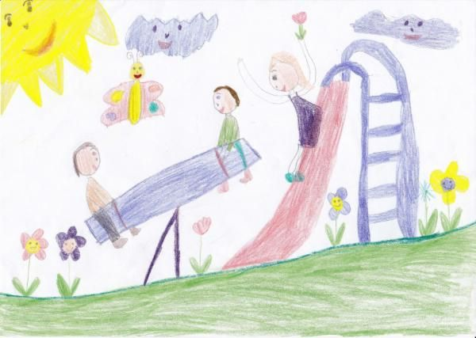
Help the butterfly collect the stars and open the magic door 🦋⭐🚪
⏱ ~3 min · 3 scenes · ages 8–10 · drawing + real voice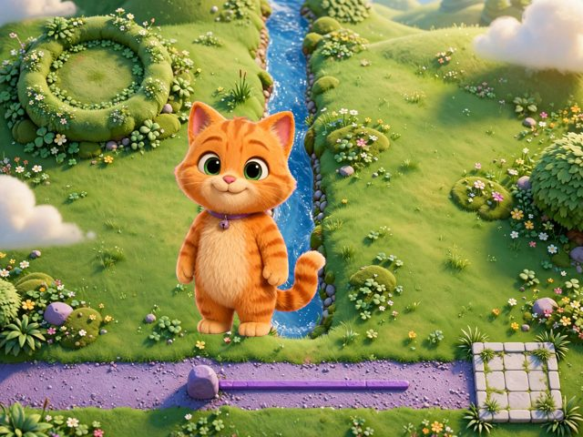
“The cat goes to the house without touching the water, and a ghost walks underneath” 🐱👻🏠
⏱ ~3 min · 3 scenes · ages 8–10 · drawing + voice rule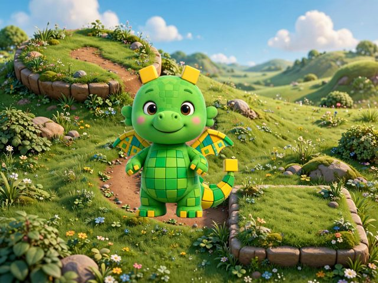
“A dragon flies to the castle” 🐉🏰✨
⏱ ~3 min · 3 scenes · ages 8–10 · drawing + voice rule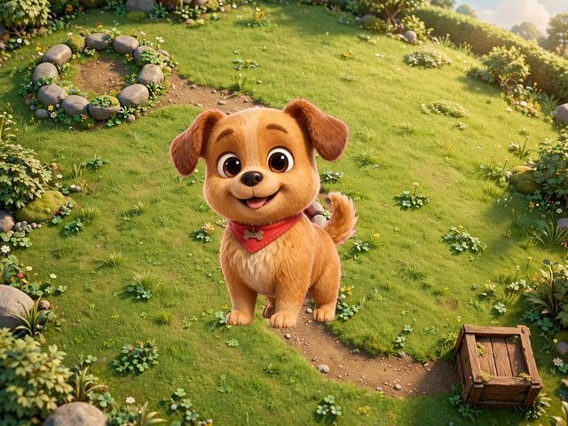
“The dog looks for the bone and can't touch the fire” 🐶🔥🦴
⏱ ~3 min · 3 scenes · ages 8–10 · drawing + voice rule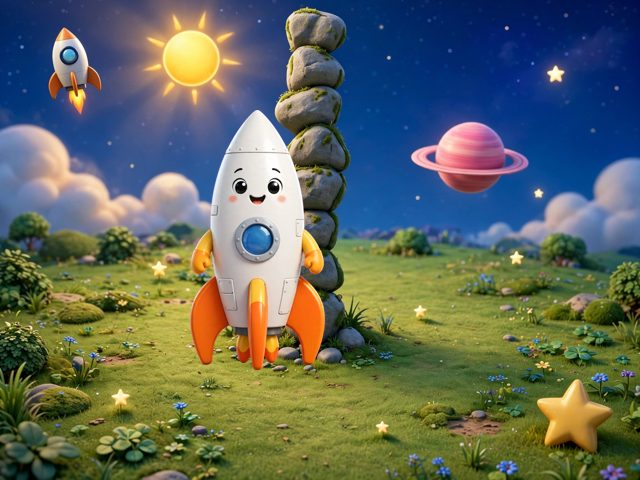
“My ship has to reach the star without touching the rocks, but a monster guards it” 🚀⭐👾
⏱ ~3 min · 3 scenes · ages 8–10 · drawing + voice rule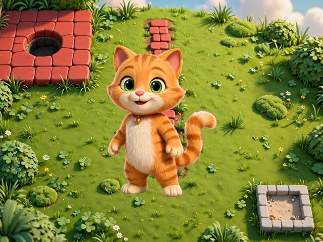
“The cat wants the bone but there is fire” 🐱🔥🦴
⏱ ~3 min · 3 scenes · ages 8–10 · drawing + voice rule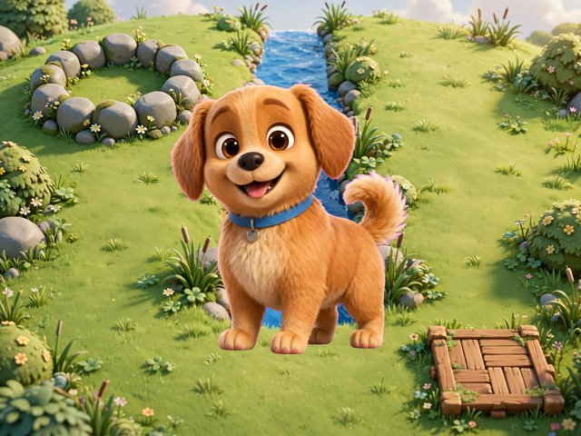
“The dog goes to the house and there is water in the middle” 🐶💧🏠
⏱ ~3 min · 3 scenes · ages 8–10 · drawing + voice rule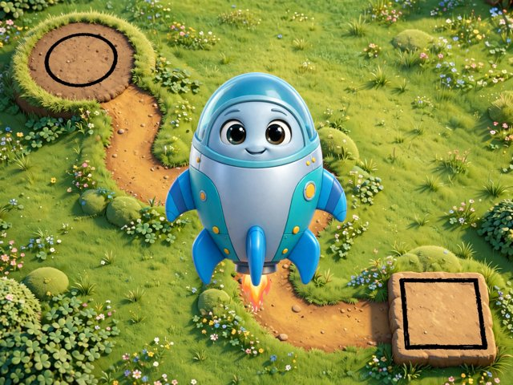
“The ship looks for the house” 🚀🏡✨
⏱ ~3 min · 3 scenes · ages 8–10 · drawing + voice rule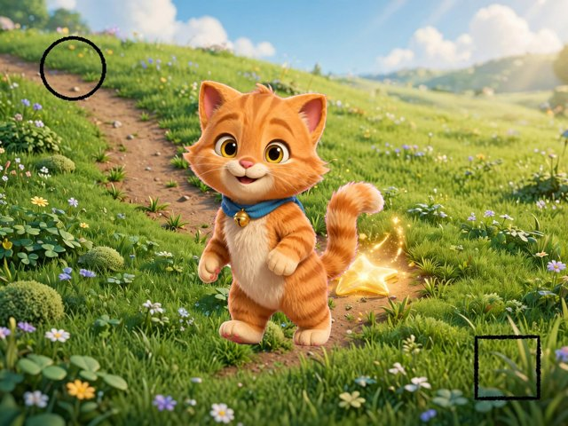
“the kitten runs to the little star” 🐱⭐💛
⏱ ~3 min · 3 scenes · ages 8–10 · drawing + voice rule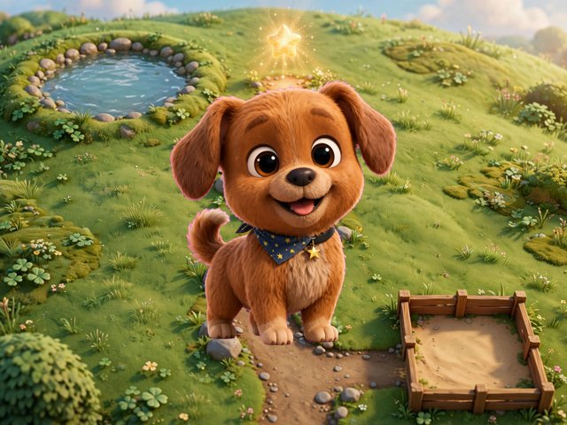
“The dog has to reach the star without touching the rocks” 🐶🪨⭐
⏱ ~3 min · 3 scenes · ages 8–10 · drawing + voice rule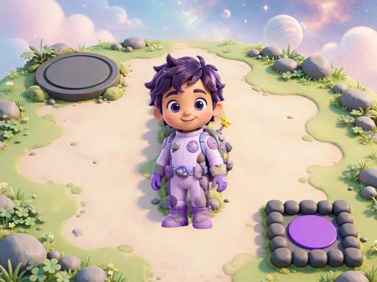
“The ship looks for the star, dodging the rocks, but a monster guards it” 🚀👾⭐
⏱ ~3 min · 3 scenes · ages 8–10 · drawing + voice rule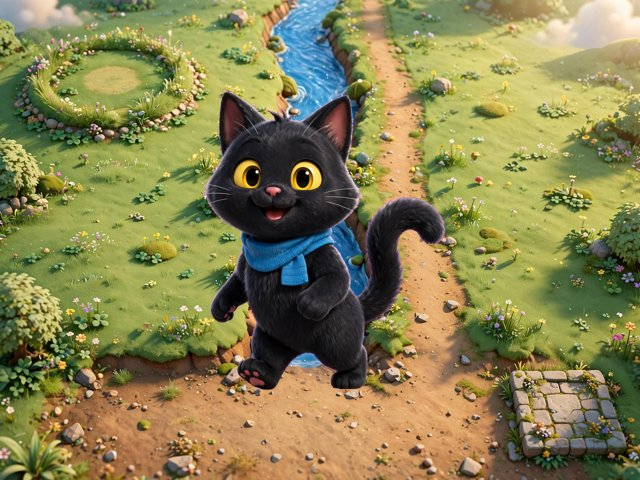
“The cat has to reach the house and can't touch the water” 🐱💧🤝
⏱ ~3 min · 3 scenes · ages 8–10 · drawing + voice rule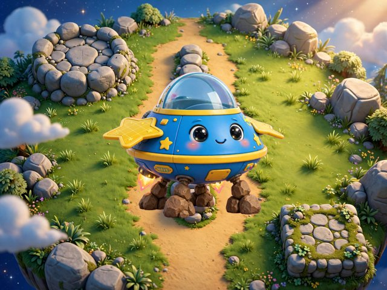
“The ship reaches the star by dodging the rocks” 🛸🪨⭐
⏱ ~3 min · 3 scenes · ages 8–10 · drawing + voice rule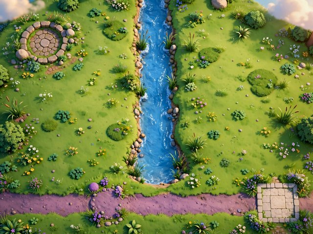
“The cat goes to the house without touching the water, and a ghost walks underneath” 🐱👻🏠 · another adventure
⏱ ~3 min · 3 scenes · ages 8–10 · drawing + voice rule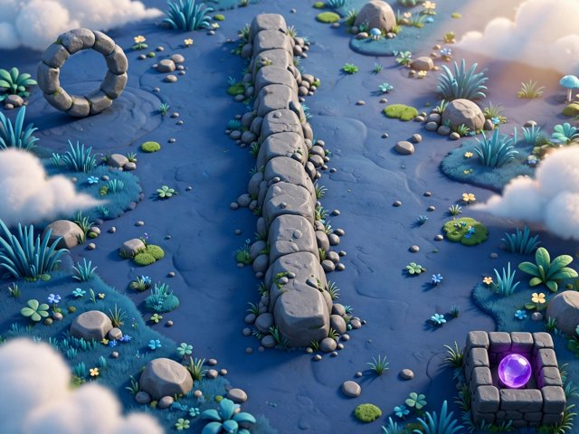
“The ship looks for the star, dodging the rocks, but a monster guards it” 🚀👾⭐ · another adventure
⏱ ~3 min · 3 scenes · ages 8–10 · drawing + voice rule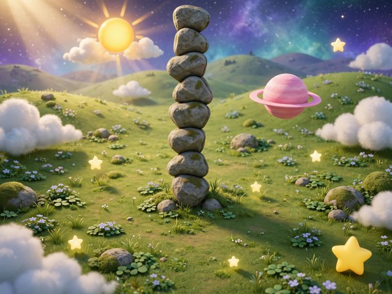
“My ship has to reach the star without touching the rocks, but a monster guards it” 🚀🪐👾 · another adventure
⏱ ~3 min · 3 scenes · ages 8–10 · drawing + voice rule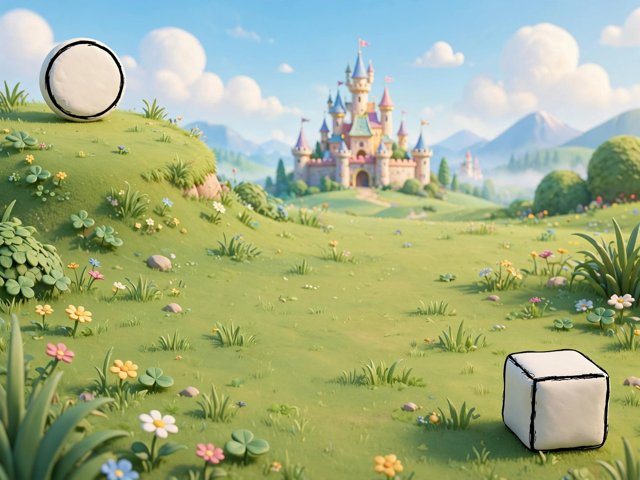
“A dragon flies to the castle” 🐉🤝🏰 · another adventure
⏱ ~3 min · 3 scenes · ages 8–10 · drawing + voice rule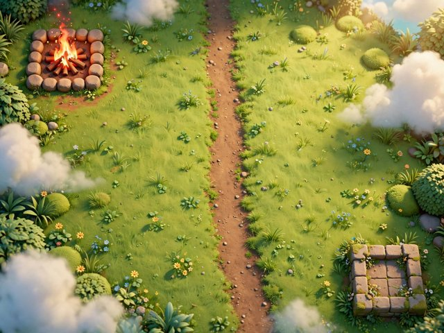
“The cat wants the bone but there is fire” 🐱🔥🦴 · another adventure
⏱ ~3 min · 3 scenes · ages 8–10 · drawing + voice rule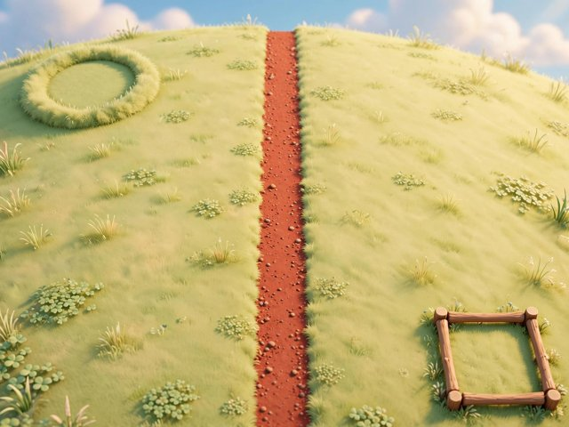
“The dog looks for the bone and can't touch the fire” 🐶🔥🦴 · another adventure
⏱ ~3 min · 3 scenes · ages 8–10 · drawing + voice rule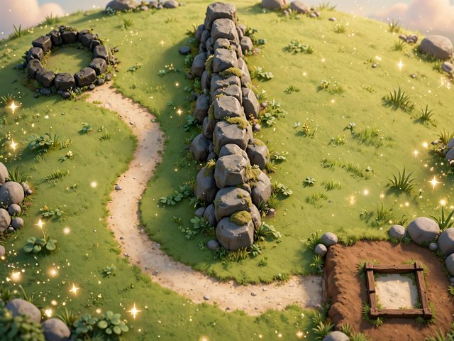
“The dog has to reach the star without touching the rocks” 🐶🪨⭐ · another adventure
⏱ ~3 min · 3 scenes · ages 8–10 · drawing + voice rule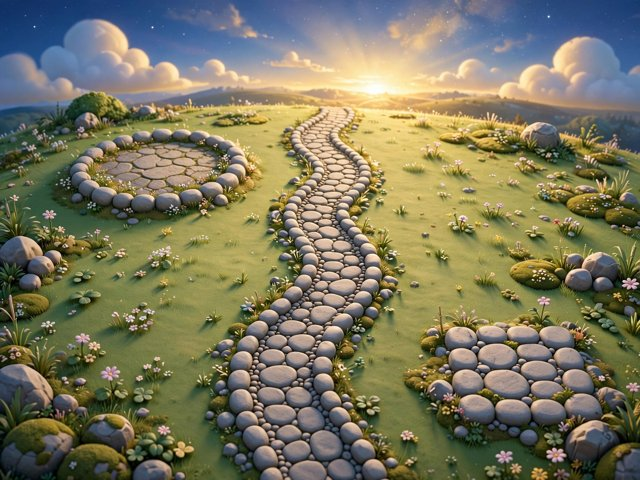
“The ship reaches the star by dodging the rocks” 🚀🪨⭐ · another adventure
⏱ ~3 min · 3 scenes · ages 8–10 · drawing + voice ruleFor judges: “Judge view” shows how the agent checks the game. · Agent lab